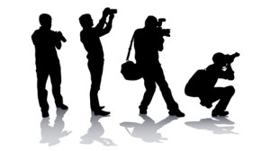

OpenPompei è un progetto che sin dall’inizio sta marciando su un doppio binario: sostenere la Direzione Generale del Grande Progetto Pompei nell’apertura dei dati relativi a questa importante partita e sostenere e/o proporre attività di civic hacking sul territorio. Sulla prima linea ci sono (finalmente) delle aperture in arrivo e non vediamo l’ora di mostrarvi ciò che stiamo preparando dietro le quinte. Intanto per tutti i civic hackers e gli amanti di fotografia abbiamo una bellissima notizia da dare: la Soprintendenza Archeologica di Pompei ha inserito tutti i siti archeologici sotto la propria giurisdizione tra i beni liberamente fotografabili per il contest Wiki Loves Monuments.
La notizia, pubblicata ieri, è rimbalzata subito sulle più importanti testate. Già l’anno scorso su questo blog avevamo scritto a proposito del contest (qui) e con l’arrivo della nuova Direzione Generale del Grande Progetto Pompei abbiamo subito iniziato un dialogo a proposito dell’importanza del lavoro di Wikimedia Italia nell’organizzazione e nella promozione dell’iniziativa. Siamo stati ascoltati e la nostra opera di mediazione ha portato dei frutti come potete leggere dal comunicato stampa della Soprintendenza di Pompei e dal post di Wiki Loves Monuments.
Wiki Loves Monuments è l’occasione di poter popolare le pagine di Wikipedia con le immagini del nostro patrimonio culturale. In Italia, in virtù del comma 3 dell’articolo 108 del D. Lgs. 22/2004, meglio noto come codice dei beni culturali e del paesaggio, deve essere rilasciata un’apposita autorizzazione perché i beni culturali possano essere fotografati.
Wiki Loves Monuments arriva in Italia nel 2012 promosso e coordinato da Wikimedia Italia, associazione di promozione sociale finalizzata alla diffusione della conoscenza libera. Il progetto nasce come contest fotografico dedicato a monumenti (nell’accezione ampia di edifici, sculture, siti archeologici, strutture architettoniche, interventi dell’uomo sulla natura, siti naturali, affreschi monumentali, iscrizioni) che invita tutti i cittadini a documentare la propria eredità culturale realizzando fotografie da rilasciare con la licenza CC-BY-SA e da caricare su Wikimedia Commons, database accessibile a tutti. I vincitori del contest vengono premiati con materiale fotografico e libri, ma non è certo questo che incita la partecipazione. Lo scopo generale è valorizzare e tutelare il patrimonio culturale e in particolare aumentare l’accesso e la visibilità del patrimonio nel suo complesso tramite l’ampliamento dei contenuti di Wikimedia Commons.
{kind=link}
Il grande lavoro di Wikimedia Italia è dunque quello di incentivare e raccogliere le autorizzazioni da parte degli enti preposti alla gestione dei diversi monumenti da inserire poi in una lista, in continuo aggiornamento, di monumenti liberati.
Qui potete leggere la storia del contest con tutti i suoi dettagli e qui potete capire partecipare.
Qual è il “patrimonio culturale” che si sceglie di conoscere e/o visitare? Non certo quello di cui non è possibile nemmeno sapere in che cosa consiste!
si domanda il civic hacker Luca Corsato e noi, che siamo perfettamente d’accordo con lui e volevamo fortissimamamente che Pompei facesse parte della lista dei monumenti liberati, ci abbiamo messo lo zampino.
La legislazione attuale vieta il libero riutilizzo delle riproduzioni dei beni culturali per usi commerciali e, di fatto, la possibilità di condivisione su social e su Wikipedia, le cui licenze consentono invece l’uso commerciale delle immagini pubblicate. Si possono immaginare facilmente le ricadute positive del veicolare le immagini del nostro patrimonio culturale (e di Pompei) attraverso uno dei siti più visitati del pianeta, che rilascia le immagini in CC-BY-SA: alzi la mano chi non ha mai utilizzato Wikipedia per fare una ricerca, di qualsiasi tipo e per qualsiasi scopo!
Tra le ricadute positive, oltre al più facile accesso ed alla maggiore visibilità, potrebbe esserci anche quella tanto ricercata produttività del patrimonio culturale, in questo senso definito, forse in maniera ormai un po’ malinconica viste le difficoltà del settore, il “petrolio della nazione”.
Il comma 3 dell’articolo 108.
Si è già fatto cenno al comma 3 dell’articolo 108 del D. Lgs. 22/2004, che prima del cosiddetto D.L. 83/2014, meglio noto come Artbonus, legiferava così:
|
Articolo 108 Canoni di concessione, corrispettivi di riproduzione, cauzione 1. I canoni di concessione ed i corrispettivi connessi alle riproduzioni di beni culturali sono determinati dall’autorità che ha in consegna i beni (…) 2. I canoni e i corrispettivi sono corrisposti, di regola, in via anticipata. 3. Nessun canone e’ dovuto per le riproduzioni richieste da privati per uso personale o per motivi di studio, ovvero da soggetti pubblici per finalità di valorizzazione. I richiedenti sono comunque tenuti al rimborso delle spese sostenute dall’amministrazione concedente. |
Ed adesso non c’è più (?)
Di recente il decreto noto come Artbonus ha modificato così quel comma:
| al comma 3 dell’articolo 108 dopo la parola “pubblici” sono inserite le seguenti: “o privati” e dopo la parola “valorizzazione” sono inserite le seguenti: “, purché attuate senza scopo di lucro, neanche indiretto.” |
E per non lasciare spazio a quel luogo comune sui cittadini italiani, secondo cui “tutti si lamentano ma nessuno fa mai niente”, si segnala anche una proposta fatta alla fine dello scorso anno da un gruppo di civic hackers: l’iniziativa beni culturali aperti, che lo scorso inverno ha raccolto in poco tempo 581 adesioni a sostegno di alcuni emendamenti al codice. In particolare la proposta per il comma 3 era semplicissima: CC by SA.
| 3. Nessun canone è dovuto per le riproduzioni richieste da privati per uso non commerciale, ovvero da soggetti pubblici per finalità di valorizzazione. Nessun canone è altresì dovuto per le riproduzioni fotografiche e audiovisive, da chiunque effettuate, qualora le stesse abbiano anche finalità commerciali ma siano associate ad una licenza che ne permetta il riuso. Con proprio decreto, il Ministro competente individua ulteriori tipologie di riproduzioni consentite e specifica gli eventuali scopi non rientranti tra quelli di cui al presente comma. I richiedenti sono comunque tenuti al rimborso delle spese eventualmente sostenute dall’amministrazione concedente” |
Liberare dalla richiesta di autorizzazione e dal canone di riproduzione immagini rilasciate con licenza CC by SA favorirebbe la condivisione di riproduzioni dei beni culturali su piattaforme come Wikipedia e altre piattaforme associate, oppure sul portale europeo dei beni culturali Europeana, di alcuni cui progetti abbiamo già parlato qui e qui.
Poiché Pompei è stata autorizzata, questa potrebbe essere l’occasione per popolare di “belle fotografie”, le pagine di Wikipedia dedicate alle sue diverse regiones, dettagliate in insulae fino ai singoli civici (guarda la pagina della Regio VI, dove all’insula 12, civico 2, si trova la Casa del Fauno, con link di rimando alla relativa pagina ad essa dedicata su Wikipedia).
“Con una simile bellezza si può rovesciare il mondo!” esclama Adelaìda nell’Idiota, guardando un ritratto di Natasja Filippovna. E nello stesso libro il principe Miškin crede che la bellezza salverà il mondo: quindi chissà quanto le fotografie che invierete (ed il loro riuso) potranno contribuire a migliorare la valorizzazione della nostra Pompei e la sua visibilità nel mondo.
A breve altre notizie perché la collaborazione con Wikimedia Italia e Wiki Loves Monuments non si ferma qui.
Nell’immagine in evidenza la foto 7° classificata nella scorsa edizione di Wiki Loves Monuments: stazione ferroviaria di Keleti a Budapest (Ungheria) di Németh Tibor [Licenza CC-BY-SA 3.0].
molto interessante,,mi piacerebbe porre alcune domande,sono un amante di arte e in particolar modo di mosaici ,mi diletto per hobby anche se mi piacerebbe poterlo fare come professione,ma la mia eta ‘,e il lavoro che svolgo attualmente’ non me lo consente anche se in fondo al cuore un voce mi spinge a dare una svolta,mi piscerebbe avere un riscontro da parte vostra,mostranndovi alcuni dei lavori che ho esguito,esposti pubblicamente a Scafati via s.A.Abate 85 e visibili a tutti,spero di esguirne altri e dare visibilita’a questo territorio.
Ciao, Bernardino. Grazie tantissime dei complimenti. siamo molto contenti di questa partecipazione

E grazie anche a te e alla tua disponibilità!
Non abbiamo in programma imminenti viaggi sul territorio. Speriamo presto. Magari sarà l’occasione di conoscere anche i tuoi lavori. Grazie davvero per l’invito
Pingback: Una Repository di Buone Pratiche in Campania? Cominciamo da MappiNa | OpenPompei